事件抽取¶
大纲：¶
- 1. 什么是事件
- 1.1 事件组成元素
- 1.2 事件抽取
- 1.3 知识抽取相关竞赛
- 2. 事件抽取任务的基本做法
- 2.1 Schema的制定
- 2.2 信息的抽取方法
- 2.3 事件抽取模型的评价
- 3. 事件抽取技术有啥用？
- 4. 例子
1. 什么是事件¶
“事件”指在特定的时空下，由一个或多个角色（事件主体）参与的，围绕某个主题开展的一系列活动。
1.1 事件组成元素
组成事件的各元素包括: 触发词、事件类型、论元及论元角色。
- 事件触发词/trigger ：表示事件发生的核心词，多为动词或名词；
- 事件类型/event type ：ACE2005 定义了8种事件类型和33种子类型。其中，大多数事件抽取均采用33 种事件类型。 事件识别是基于词的34 类( 33类事件类型+None) 多元分类任务，角色分类是基于词对的36 类( 35 类角色类型+None) 多元分类任务；
- 事件论元/事件要素/argument ：事件的参与者，主要由实体、值、时间组成。值是一种非实体的事件参与者，例如工作岗位 ；
- 论元角色/要素角色/role ：事件论元在事件中充当的角色。共有35类角色，例如，攻击者 、受害者等。
如下例句：在 Baghdad，当一个美国坦克对着 Palestine 酒店开火时一个摄影师死去了。
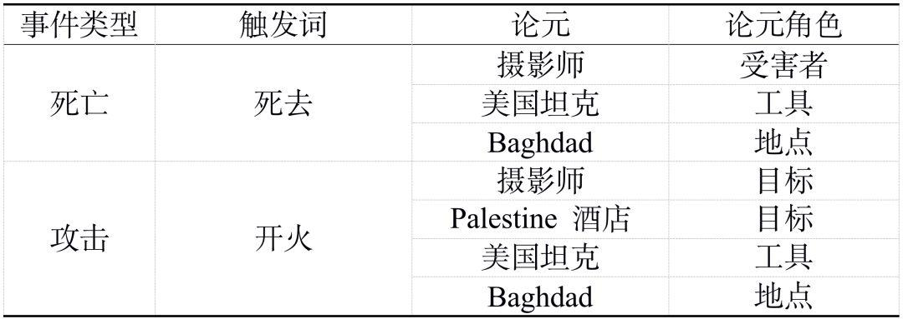
“事件图谱“指持续、快速地获取客观世界中发生的事件，并丰富事件属性、建立事件间的关联关系，构成以事件为基本单位的知识网络。
事件抽取的目标即自动化的从非结构化的信息中完成上述信息的获取，并结构化进行展示。事件抽取是信息抽取领域中一项重要且具有挑战性的任务。其可以为知识库构建，问答以及语言理解任务提供有效的结构化信息。然而传统的事件抽取任务大多数基于句子层面，但是这样具有很明显的缺陷：一个事件会涉及到触发词和多个论元，但是实际情况中，很少会有触发词和所有的论元都出现在一个句子中的理想情况（如图1），所以如果在实际的文本中，孤立的从单个句子抽取，很可能会得不到完整的事件信息。因此，研究文档级别的事件抽取，如何获取跨句子的信息，对事件抽取的实际应用是很有帮助的。
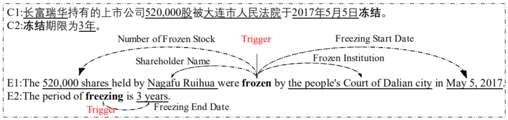 图1 触发词以及论元位于不同句子中的例子
1.2 事件抽取
（1）定义
事件抽取技术是从非结构化信息中抽取出用户感兴趣的事件，并以结构化呈现给用户。
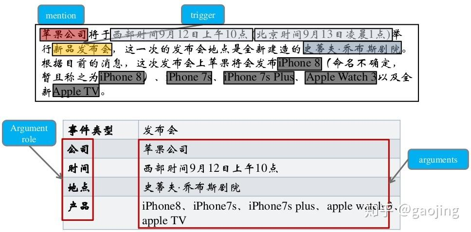
事件抽取任务可分解为4个子任务: 触发词识别、事件类型分类、论元识别和角色分类任务 。
其中，触发词识别和事件类型分类可合并成 事件识别任务 。论元识别和角色分类可合并成 论元角色分类任务 。事件识别任务判断句子中的每个单词归属的事件类型，是一个基于单词的多分类任务。角色分类任务则是一个基于词对的多分类任务，判断句子中任意一对触发词和实体之间的角色关系。
（2）分类
事件抽取任务总体可以分为两个大类：元事件抽取及主题事件抽取。事件表示一个动作的发生或状态的变化。往往由动词驱动，也可以由能表示动作的名词等其他词性的词来触发，它包括参与该动作行为的主要成分 ( 如时间、地点、人物等) 。主题事件包括一类核心事件或活动以及所有与之直接相关的事件和活动，可以由多个元事件片段组成。当前主要是面对元事件抽取，关于主题事件抽取的研究较少。
1.3 知识抽取相关竞赛¶
- 消息理解会议（MUC）
MUC是由美国DARPA发起，目的在于鼓励和开发信息抽取系统，主要以召回率和精确率来评价信息抽取系统性能的重要指标，一般是基于召回率和精确率来计算法F1值 - 自动内容抽取（ACE）
由美国国家标准技术研究所（NIST）组织的评测会议，主要包括 实体检测与跟踪、关系检测与表征、事件检测与跟踪 ，与MUC解决的问题类似，只是对MUC的任务进行融合。 - 知识库填充（KBP）
由文本分析会议主办，其目的是开发和评估从非结构化文本中获取知识填充知识库的技术，主要任务包括 实体发现与链接、槽填充、事件跟踪和信念与情感分析 - 语义评测（SemEval）
由ACL-SIGLEX组织发起，是比较早进行实体消歧的评测任务的机构，目的是增进人们对词义与语义现象的理解，主要包括语义角色标注、情感分析、跨语言语义分析等
2. 事件抽取任务的基本做法¶
在前面所述概念的基础上，我们可以列出事件抽取模型的核心构成：
（1） 事件类型体系，以及各类事件里重要的角色，统称为schema。
（2） 信息抽取方法。
2.1 Schema的制定¶
事件抽取任务的起点，是需求的出现。关心金融领域的朋友，持有市值约370元人民币的基金，希望了解所有可以影响市场情绪的事件。因此，海量新闻数据中识别特定类型的事件就是我们的需求。
需求确定了，接下来的任务就是把需求转换为人和机器都可以理解的一种形式，即制定事件的schema。“schema”即纲要，是我们对事物一般的、抽象的描述，体现人类对事物的认知水平，决定了机器抽取事件的能力，因此非常重要。
schema的定义
简单来说，一个知识图谱的schema就是相当于一个领域内的数据模型，包含了这个领域里面有意义的概念类型以及这些类型的属性。任何一个域的schema主要由类型（type）和属性（property）来表达。举例说创投schema，主要是为了发掘一级市场的投资和融资构建的schema,该schema主要是去定义需求，哪些数据对创投有用，才往上构建，例如：人物都有身高 体重，但是这些数据对创投来说意义不大，在schema中就不用构建了。关注创投的人会关注这些基金与人物投资了哪些公司，投资的公司所属行业，投资的公司属于哪一类企业，在该schema中就需要详细构建。
一个完整的事件schema，应当包括：
（1） 事件类型体系 ，比如“企业成立”、“企业并购”等等组成的，就是我关心的事件的类型体系；
（2） 各类事件的重要角色 ，比如表2.1所示的各个字段，就是一个事件得以发展所依赖的重要角色。有时候，我们会设置一种特殊的角色，即“事件触发词”，用来辅助判断事件的发生。
确定了schema，一方面方便大家在相同的概念基础上展开协作，另一方面也让机器有了相对确定的学习和预测目标。
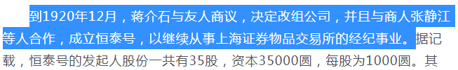图2.1 《炒股还是革命？股民蒋介石的投机人生》片段(https://mil.news.sina.com.cn/history/2020-07-16/doc-iivhuipn3293292.shtml)
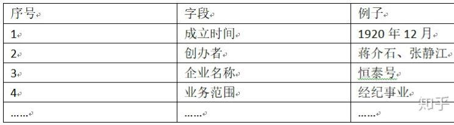表2.1 一个企业成立事件的描述信息
如何构建schema
1.如何构建域（domain）
域（domain）的概念是凌驾于所有类型之上，对于域的定义应该尽量的抽象，不应该具体，同时域与域之间应尽量做到相互独立，不交叉。例如，省份就不应该是一个域的概念，在思考是否应该把一个概念当做域时，需要考虑到该概念是否能够继续向上抽象，例如：省份；城市；国家；县等等，他们同属于地理位置域。在明确域的概念时，应该定义好域的边界，这样比较容易区分不同域之间的区域划分。
2.如何确定一个域的类型（type）
这里需要产品经理去思考，构建这个schema的核心需求是什么，到底需要解决用户什么问题。为了满足这些核心需求，我们需要创造出哪些概念？
举个例子，在汽车领域，用户主要关心什么问题，例如：汽车的品牌、车系、发动机。
在NBA领域，用户主要关心球队、所属联盟、教练、球员等等。
针对不同的需求，需要在域下面构建不同的类型来满足用户的需求。
3.如何确定属性（property）
思考的角度如下：
1).以用户需求为出发点
2).以数据统计为证据
比如在构建完足球领域中的球队类型后，该类型集合了所有的球队实体，站在用户角度触发，用户会关注球队的哪些关系？
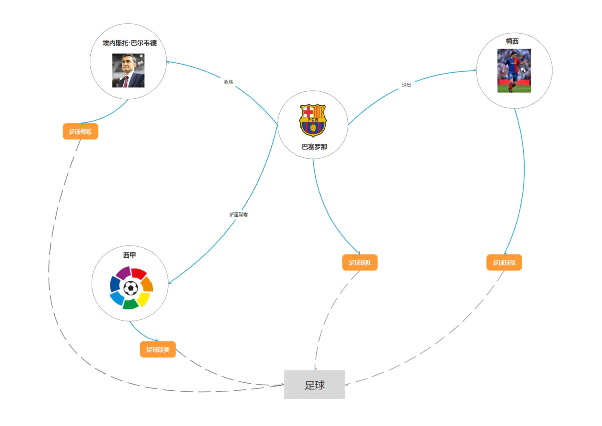 图2 足球领域schema
图2是针对足球领域构建的一个图谱，上面包含了梅西（球队的球员），埃内斯托·巴尔韦德（球队的教练），西甲（球队的所属联赛），其中梅西、西甲、埃内斯托.巴尔韦德又分属于不同的类型：足球球员，足球联赛，足球教练，这些所有的类型构成了足球域。
从上图的common sense配合图查询和自然语言处理技术已经可以支持基础的问答了，例如，梅西是哪个球队的？埃内斯托巴尔韦德是哪些球员的教练？西甲有哪些球队在踢球？等等
2.2 信息的抽取方法¶
事件抽取的schema和知识图谱的schema是同一种东西，类似“语义槽”，需要从原始数据中抽取特定的片段来填写，就像表2.1的“例子”一栏一样。至此，我们就进入到了事件抽取任务的第二个子任务，即 信息抽取模型构建 ——换句话说， 我们需要构建一定的工具，让它从半结构化、非结构化数据中，把schema描述的信息抽取出来 。
目前的主流做法，是用两个子任务完成信息的抽取：
（1） 识别事件并判断类型 。可以用序列元素分类的方式 识别触发词并判断事件类型 ，或者直接 使用文本分类的方式判断mention对应的事件类型 。
（2） 识别事件角色 。用序列元素分类，或者三元组抽取的方式，把事件的重要角色识别出来并分类。
我们可以使用流水线结构的模型（如图2.2），也可以使用联合模型(如图2.3)，来做事件抽取。流水线式模型构建较为简单，但是存在误差传递。
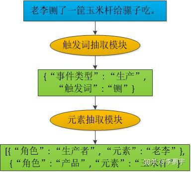图2.2 一个流水线式事件抽取模型
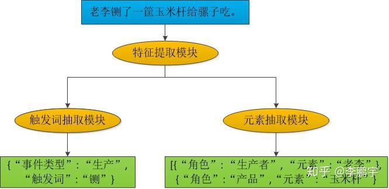图2.3 一个用于事件抽取的联合模型
2.3 事件抽取模型的评价¶
模型的评价指标，可以根据任务的需求来制定。假如我们强调尽可能多、尽可能正确地识别事件，那么我们可以使用 查全率(recall)、查准率(precision)、F1-score 这样的简单指标；
假如我们比较重视错误识别带来的损失，那么可以对各类错误代价加权求和、得到一个 错误总代价 。
2.4 schema的应用¶
schema的应用是产品经理需要重点考虑的内容，因为产品需求决定了schema应该怎么构建，构建的是否完备。而产品的具体应用则主导了schema的整体构建方式，如果不仔细考虑产品应用的话，最惨的情况可能构建了很久的schema会因为一个逻辑坑而彻底报废掉，由于知识图谱又是一个牵一发而动全身的工程，根据实际经验来说，如果图谱构建和应用有部分脱节，可能修改图谱schema比重新构建图谱schema的成本还要高。所以，首先确认好具体的应用场景对于一个schema构建的成功与否是至关重要的。
笔者写一套曾经用过的确认schema的流程
1.需求划分 先将应用根据需求的强弱划分，分为基础核心需求，schema特色需求，锦上添花需求，未来扩展性需求。
基础核心需求：是经过需求分析后，构建这个schema需要完成最核心的需求，该需求优先级最高
schema特色需求：构建图谱时可能会经常遇到图谱可以实现而其他方法实现比较困难的特色需求，这类需求可能需求强度不是很高，但是由于能够实现一定的差异性，经常会有意想不到的效果。
锦上添花需求：非基础核心需求，做了更好，不做也可以接受
未来扩展性的需求：确认schema的时候要充分考虑到未来的扩展性，因为这类需求有可能会大改图谱的schema结构
2.列出功能点 在构建schema的时候，根据上述分类，需要去考虑该schema一期需要满足哪些具体的功能，将功能一一列下来，哪些功能是需要放在第二期、第三期完成的，未来的扩展性需求需要在构建的哪一块区域留下可扩展的内容。
常用的方法可以使用excel去列出一、二、三期所需要的功能点。
3.转化成查询结构 列出上述的功能点后，针对每一个功能点在后面备注好该功能的构建要点（注：这个非常重要），通常需求只需要将产品需求转化成一定的查询结构即可，笔者原来用的是cypher查询语法。以图2为例，我要支持某个教练教了哪些球员？转化成查询语言就是（a:足球教练）<-{b:教练}-（c:球队）-{d:球员}-（e:足球球员） return e。将a变成参数，输入a即可返回所有的e，即输入埃内斯托巴尔韦德，返回就是梅西。
流程如下：query:埃内斯托巴尔韦德带了哪些球员？→语义解析→转化成上述查询，将埃内斯托巴尔韦德作为参数a代入查询→返回结果→前端包装展示
注：上面在每个功能点后面备注了构建要点，当大部分功能点的构建要点都写完的时候，需要集中查看构建要点，因为如果需求本身比较大的话，不同的需求很容易造成schema的构建冲突，正如前面所讲，schema尽量要保证少出错。这个时候由于备注了构建要点，可以全局的来审视这个schema中间有没有逻辑黑洞。常出现的问题主要是在属性的设计，以及知识融合上。
4.转化开发需求 拿着上述文件去找开发，确认一下哪些是比较好实现的，一般来说做到这种程度大多数需求开发都是会接的。如果开发同学足够专业的话，他会从他的视角去给你提出他的宝贵意见。通常产品经理在思考schema这一块更倾向于思考这个schema的作用，而开发同学会思考工程实现、实现效率、运行效率、计算量等问题。
3. 事件抽取技术有啥用？¶
从理论研究的角度看，事件抽取任务是对NLP模型认识世界、理解世界的能力的一种评测手段。当我们有若干指标来评价一个事物的时候，这个事物就有了发展的方向——事件抽取任务是NLP发展到一定程度时，一个重要的评测指标。
从应用的角度看，事件抽取技术可以帮助依靠情报生存的同志们提升工作效率(用简洁而时髦的话术就是“赋能”)。
事件抽取技术的核心价值，是可以把半结构化、非结构化数据转换为对事件的结构化描述，进而支持丰富的下游应用。
比如说我们要为一些人物整理年表，如图3.1，把人物经历的重要事件汇总起来，就可以用事件抽取方法来完成；我们不仅可以整理历史数据，还可以把新闻数据中的事件(天气、体育比赛情况、不和谐的行为和言论、面馆开张信息等等)抽取出来；等等。
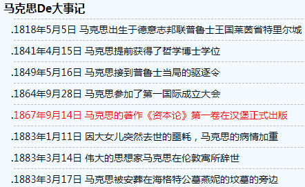图3.1 马克思生平大事年表(http://www.verydaily.com/history/event-33.html)
抽取出来的结构化数据，最大的特点就是字段含义明确。一方面，结构化数据支持各种各样的数据统计，比如把蒋委员长年轻时开店的事件聚合起来，分析盈亏状况，进而了解委员长的商业能力；另一方面，结构化的事件数据，可以支持我们做文本生成，比如把表2.1所示事件改写为“蒋介石和张静江于1920年12月创立了关注经纪事业的恒泰号。”
4. 例子¶
火灾新闻例子：
一个火灾事件新闻我们感兴趣的是 事故发生时间，事故发生地点，事故伤亡,事故原因。
我们把这些抽取出来。
即输入一个火灾事件新闻，输出 事故地点，事故时间，事故伤亡，事故原因，事故摘要。
方法：基于正则。
导入包：
事故原因：
(?:X)在正则中表示所匹配的子组X不作为结果输出
理解下里面的正则
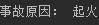
事故伤亡：
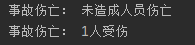
事故时间：
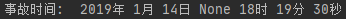
事故地点：
主函数：
数据集：新闻.txt
运行结果
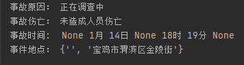
完整代码：
参考：
nlp事件抽取算例实现：（有完整算例和完整代码）_kobeyu652453的博客-CSDN
知识图谱-事件抽取综述_qq_32037669的博客-CSDN博客
凡本网注明"来源：XXX "的文/图/视频等稿件，本网转载出于传递更多信息之目的，并不意味着赞同其观点或证实其内容的真实性。如涉及作品内容、版权和其它问题，请与本网联系，我们将在第一时间删除内容！
作者: 三三, 哈工大SCIR, 画一个逗逗陪着我
来源： https://zhuanlan.zhihu.com/p/231932147 , https://www.jiqizhixin.com/articles/2020-07-29-4 , https://www.jianshu.com/p/704e935c98a9